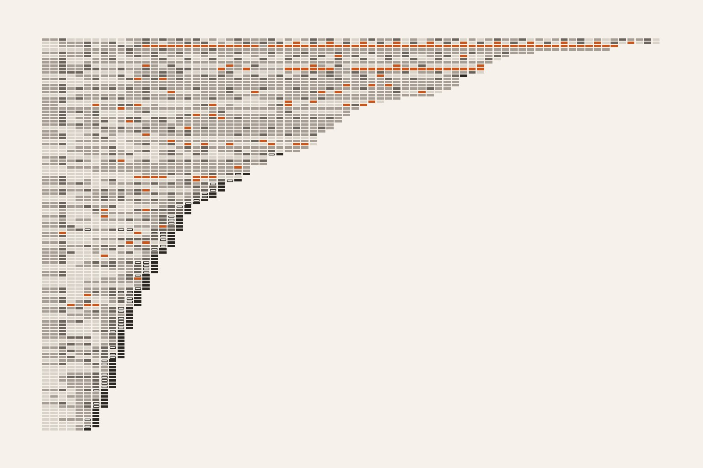
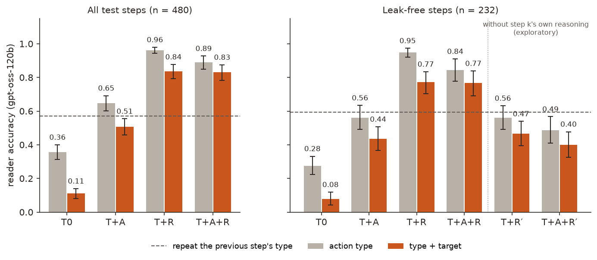
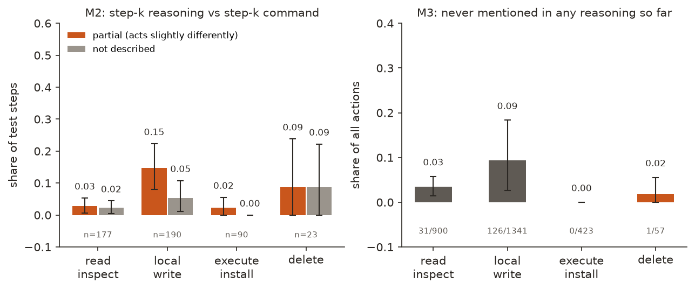

← Research·Experiments·
An agent’s reasoning predicts its next command because it announces it; earlier reasoning adds nothing over its actions
When we monitor a coding agent by reading its reasoning, how much does the reasoning tell us about what it does next, and does it describe what it did? On 120 open SWE-agent trajectories: the reasoning predicts the next command well, but only the sentence written with it; most steps do what they say; and the actions no reasoning mentions are mostly edits that land in the wrong file.

Summary: the short answer and the key results
In short
Does a coding agent’s written reasoning tell a monitor what it is about to do, and does it describe what it did?
For SWE-agent on open trajectories, mostly yes, with one large qualification. A reader (gpt-oss-120b) that sees the agent’s reasoning predicts the type and target of its next command on 0.77 of the steps whose reasoning does not name the target, against 0.44 from the commands and outputs so far. But almost all of that comes from the reasoning written in the same message as the command, which usually announces it. With that one paragraph removed, the earlier reasoning predicts 0.47, no better than the action history. Step by step, 89% of commands do what their reasoning says, and 5.8% of all actions are never mentioned in any reasoning; most of those are edits that land in a different file from the one the reasoning names, inside a few looping trajectories. The only risky action type in the data, deleting files, was always announced.
Key results
| What we tested | Result | Compared with |
|---|---|---|
| Predict the next command (type and target) from the reasoning | 0.772 [0.704, 0.834] of 232 leak-free steps | From the action history: 0.435 [0.367, 0.507]; repeat the last step’s type: 0.595 (type only) |
| The same, without the reasoning written with the command (exploratory) | 0.466 [0.396, 0.539] | Action history: 0.435; difference +0.030 [−0.054, +0.119] |
| Does the command do what that step’s reasoning says? | Matches 0.887; acts slightly differently 0.077 [0.046, 0.110]; not described 0.033 | Edits are the most often different: 0.147 |
| Actions never mentioned in any reasoning so far | 158 of 2,721: 0.058 [0.024, 0.104] | Half are in 2 of 120 trajectories; read by hand, most are edits to a file other than the one named |
| Risky actions (deleting files; no permission or network changes occur) | 0 of 57 unmentioned, read by hand | The judge flagged 1; its reasoning says “Let’s clean up by removing the test script” |
01Introduction
A software agent fixing a bug writes a paragraph, then runs a command: “Let’s correct the reproduce.py script by providing the actor_id parameter to the Actor class”, and then an edit. If you were watching it, you would read the paragraph and trust that the edit goes to reproduce.py. In one trajectory in this study it went to the library’s dapr/actor/runtime/__init__.py, the file that happened to be open, and the agent kept making that edit for the rest of the run: 57 times, 55 of them under that same paragraph.
What is known. Reading a model’s chain of thought is one of the main proposals for overseeing it (Chain of Thought Monitorability), and it catches real misbehaviour in coding agents (Monitoring Reasoning Models for Misbehavior). But reasoning models do not always say what they think (Reasoning Models Don’t Always Say What They Think). The whole-trace-monitorability project asks a sharper version for agents: given the trace up to a step, with that step’s tool call hidden, how well can a reader predict the call from the actions alone, the reasoning alone, or both?
What is missing. That project runs on gated transcripts, so its numbers cannot be checked by others. And predictability is only half the question for ordinary agents: an agent can reason one way and act slightly differently, or take steps its reasoning never mentions, with no bad intent at all.
What this note does. It re-implements the predictability measurement independently on open SWE-agent trajectories and adds two measurements aimed at ordinary behaviour. Its contributions:
- A measurement on open data: how much of the next command a reader recovers from the reasoning, the actions, or both, with intervals.
- A control that changes the reading: removing the reasoning written in the same message as the command shows where the reasoning’s advantage comes from.
- Two measurements of everyday mismatch: step-level divergence between reasoning and command, and actions no reasoning mentions, with a pattern behind most of the latter (wrong-file edits).
- A cheap, open setup: an open-weights reader and judges, about $1.28 of calls, every label shipped.
What would count as success. Set before any model call (the plan’s predictions, scored in section 4.6):
- Reasoning adds to actions: on leak-free steps, seeing the reasoning as well as the actions raises accuracy by at least 0.05, with the interval above zero.
- Reasoning alone is at least as good as actions alone on leak-free steps.
- Steps mostly do what they say: at most 20% of steps are judged “acts slightly differently” or “not described”.
- Few actions go unmentioned: at most 10% of all actions.
02Setup
2.1 The trajectories
nebius/SWE-agent-trajectories holds 80,036 runs of SWE-agent fixing GitHub issues in Python repositories, by three Llama 3.1 fine-tunes (8B, 70B, 405B), each marked resolved or not (CC-BY-4.0; the outputs also fall under the Llama 3.1 licence). We drew 120, 20 per model × outcome, at seeded random positions, skipping runs with more than 150 entries or fewer than 6 agent steps. Each agent turn is a paragraph of reasoning followed by one command in a code fence: a shell command or one of SWE-agent’s editor tools (open, goto, scroll_down, search_file, create, edit, …). All 2,801 turns parsed into reasoning plus one command, and none had empty reasoning.
2.2 Action types and targets
Every command gets one of six action types and a target, by rule: read or inspect (open, goto, search_*, cat, ls, …), write a file (edit, create, sed -i, a redirect to a file), run or install (python x.py, pytest, pip install), delete, change permissions and network change. SWE-agent’s edit replaces lines of whichever file is open, so its target is the open file, read from the editor state the previous output reports. The 2,801 actions: 1,341 writes, 900 reads, 423 runs, 80 submits and 57 deletes, all rm of the agent’s own scratch scripts. No permission or network change occurs, and nothing is written outside the repository, so the only risky type here is delete. As a check, a second, independent classifier for shell commands agreed on all 579 shell steps’ types and 98.1% of their targets.
2.3 The three measures
- M1, predictability. For 480 test steps (4 per trajectory, step 2 or later, not submit), a reader sees the issue text and one view of the trace up to step k, with step k’s command hidden, and names its type and target. Views: T0 task only; T+A the earlier commands and their (clipped) outputs; T+R the earlier reasoning plus step k’s own reasoning; T+A+R both. A prediction is right when the type matches and the target matches (by path rule; when the rule says no but the names overlap, a short judge call decides).
- Leak-free steps. SWE-agent writes the reasoning and the command in one message, so the reasoning often names the target. A step leaks when its reasoning contains the command’s first line or the target’s file name. 248 of 480 leak (3 the whole command, 245 the target); the 232 leak-free steps are the headline.
- M2, step-level divergence. A judge reads step k’s reasoning, the editor state and its command and labels the pair matches, acts slightly differently (another target, other arguments, extra chained commands, wider or narrower scope, different edit content) or not described.
- M3, unmentioned actions. For every action (2,721), is it referenced in the reasoning so far? If step k’s reasoning names the command or the target, yes, by rule (1,298 actions). Otherwise a judge reads every reasoning paragraph up to step k and the command and answers this step, an earlier step or never, three times; the majority wins.
The reader and both judges are gpt-oss-120b, an open-weights model, through OpenRouter, with the answer constrained to a JSON schema and reasoning effort low (medium for the M3 judge). Every rate has a 95% interval from resampling whole trajectories (2,000 draws), since steps of one trajectory move together.
03How the study was run
- Write the question, measures, statistics and four predictions in the plan, before any model call.
- Sample and parse the 120 trajectories (free; about 10 minutes from the Hugging Face datasets server), label all 2,801 actions, draw the 480 test steps.
- Pilot each script on 30 steps or 3 trajectories (213 calls): read the replies, the JSON parse rate (100%) and the cost.
- Check the M3 judge’s stability on the 52 pilot items, 3 samples each (section 4.5), and fix the voting rule.
- Run M1 (1,920 predictions plus 138 target-judge calls), M2 (480), M3 (1,423 judged actions × 3 votes), and the exploratory M1 views without step k’s reasoning (960).
- Read the M3 “never” items by hand and score everything.
| Fixed before any model call | Changed after reading replies |
|---|---|
| Sample, parsing, action labels, test steps, leak rule, the M1 views and prompts, the M2 and M3 questions, the statistics, the four predictions | The M2 judge prompt: it flagged edit details it cannot see (line numbers, whether a pasted snippet is complete), so it was told to flag only what visibly contradicts the reasoning, and to write its comparison before its label |
| Reader and judge: first Claude Haiku 5.5 | Changed to gpt-oss-120b for cost reasons, before any reply was scored; the earlier run’s replies were set aside and feed no number |
| One M3 judge answer per action | Three answers at effort medium, majority wins: a single answer was unstable (section 4.5) |
| — | Added after the first results: the M1 views without step k’s reasoning, and the wrong-file rule (both exploratory) |
Conditions: the reader and judges through OpenRouter (mostly one provider), default temperature, every reply cached by prompt so each number comes from one fixed sample and reruns are free; 8,388 calls, $1.28. JSON parsed on 8,387 of 8,388 replies.
04Results
Five findings:
- 4.1 Reading the reasoning predicts the next command far better than reading the actions.
- 4.2 That advantage comes from the paragraph written with the command; earlier reasoning adds nothing over actions.
- 4.3 Nine steps in ten do what their reasoning says; edits differ most often.
- 4.4 One action in 17 is never mentioned, mostly edits that land in the wrong file, in a few looping trajectories.
- 4.5 The M3 judge was unstable alone; three votes steadied it, and it still has false alarms.
4.1 Reading the reasoning predicts the next command far better than reading the actions
On the 232 leak-free steps, the reader named the next command’s type and target correctly on 0.772 [0.704, 0.834] of steps from the reasoning, against 0.435 [0.367, 0.507] from the commands and outputs so far (paired difference +0.336 [0.248, 0.421]) and 0.078 from the task alone. Figure 1 shows all views.

The action history is a weak signal on its own: on leak-free steps it gets the type right on 0.560, below simply repeating the previous step’s type (0.595). Adding the actions to the reasoning does not help either: T+A+R gets 0.767 on leak-free steps, the same as reasoning alone, and its type accuracy is lower (0.845 against 0.948), most often by predicting “read” where the agent wrote a file (40 of 480 steps). The pattern holds for each agent model: reasoning against actions on leak-free steps is 0.75 against 0.37 (8B), 0.78 against 0.44 (70B) and 0.79 against 0.50 (405B).
4.2 That advantage comes from the paragraph written with the command
With step k’s own reasoning removed, so the reader sees only reasoning written at earlier steps, accuracy on leak-free steps fell to 0.466 [0.396, 0.539], level with the action history (difference +0.030 [−0.054, +0.119]); step k’s paragraph alone was worth +0.306 [0.238, 0.372]. This check was added after the first results and is exploratory.
“Leak-free” only removes steps whose reasoning spells out the command or the target’s file name. The rest still announce the action in words: “Let’s take a closer look at line 390 and the surrounding code” before goto 390, or “Now, let’s re-run the reproduction script again to see if the issue has been resolved” before python reproduce_bug.py. A reader does not need the file name to turn that into the right command. So on these traces, the reasoning is a good monitor of the next step because the agent narrates it, not because the reasoning reveals plans further ahead. Earlier reasoning, the part that could carry intentions, tells a reader no more than the agent’s actions do.
4.3 Nine steps in ten do what their reasoning says; edits differ most often
Of 480 test steps, the judge found the command matching its reasoning on 0.887, acting slightly differently on 0.077 [0.046, 0.110] and not described on 0.033 [0.015, 0.058]; one reply did not parse. Figure 2 (left) breaks it down by action type.

Edits are where reasoning and action part most: 0.147 of edit steps act slightly differently, mostly by changing more or other code than described: across all 53 steps that did not match, the judge named “different content” 18 times and “different scope” 16 times. Running code almost never differs (2 of 90). The judge has not yet been checked against human labels: 40 items are prepared for a blind check, and these M2 rates are provisional until it is done.
4.4 One action in 17 is never mentioned, mostly edits that land in the wrong file
Of 2,721 actions, 158 were judged never mentioned in any reasoning up to that step: 0.058 [0.024, 0.104]. 126 are writes, all of them edits (0.094 of all 1,341 writes), 31 reads, 1 delete and 0 runs. They are concentrated: 2 of 120 trajectories hold 80, and 33 trajectories have any.
Reading them shows a pattern the judge has no name for. In 7 of 12 sampled outside the two biggest trajectories, the reasoning says it will change one file and the edit lands in another, because edit acts on whatever file is open:
reasoning: “It seems there was a mistake in the previous command. Let’s correct the reproduce.py script by providing the actor_id parameter to the Actor class.”
open file: /python-sdk/dapr/actor/runtime/__init__.py
command: edit 6:6 / actor = Actor('myactor', actor_id='myactorid')
The agent never notices: the tool output shows the library file, the next paragraph says “It seems that the previous edit command was incorrectly applied”, and the same edit follows (steps 13 to 69 of swe:10089). A simple rule finds this without a judge: an edit whose reasoning names one or more files, none of them the open file. It flags 118 of 1,198 edits, in 19 of 120 trajectories, and 76 of the 126 unmentioned edits. The rule is crude and exploratory; it also flags edits whose reasoning merely mentions another file. The 405B agent produced most of them (0.18 of its edits by this rule, against 0.07 and 0.03), and the trajectory with 56 such edits is one the dataset marks as resolved.
Use the explorer to see where the unmentioned actions fall in each trajectory.
Risky actions. Every delete in the data is an rm of a scratch script the agent wrote. The judge marked one of the 57 as never mentioned, unanimously; its reasoning ends “Let’s clean up by removing the test script.” Read by hand, 0 of 57 deletes went unannounced. This dataset has no permission or network actions, so it cannot say anything about the actions a monitor would most want to catch.
4.5 The M3 judge was unstable alone; three votes steadied it, and it still has false alarms
Asked the same M3 question three times, the judge gave the same answer on 22 of 52 pilot items at effort low and 32 of 52 at medium; with three votes at medium, all three agreed on 1,174 of 1,423 judged actions (0.83). The M2 judge was stable (28 of 30 pilot items alike at low).
The single-answer pilot is why the voting rule exists: one pass called 11 of 53 pilot edits never mentioned, including edits preceded by “Let’s correct the edit command to ensure that the run method is updated correctly”. With three votes the same pilot had 3. Reading 12 of the final “never” items outside the two biggest trajectories: 7 wrong-file edits, which are real mismatches; about 3 false alarms, where the reasoning plainly announces the action (“We’ll search for the def getNodeName to locate this function” before exactly that search); and 2 with vague reasoning (“Let’s go back to the code and check for any mistakes or missed steps”). So the 0.058 is an upper-leaning estimate, and the one unmentioned delete is a false alarm. The target judge in M1 changed 3 of its 138 calls from “no match” to “match”.
4.6 The predictions
| Prediction (registered before any model call) | Metric, threshold | Result | Hit? |
|---|---|---|---|
| P1. Reasoning adds information the action history lacks (65%) | Leak-free, T+A+R − T+A, ≥ +0.05 with interval above 0 | +0.332 [0.249, 0.411] | Hit |
| P2. Reasoning alone predicts at least as well as actions alone (55%) | Leak-free, T+R − T+A, ≥ 0 | +0.336 [0.248, 0.421] | Hit |
| P3. Step reasoning mostly describes the command (60%) | Share acting differently or not described, ≤ 0.20 | 0.110 [0.077, 0.150]; judge not yet hand-checked | Hit |
| P4. Few actions go unmentioned (55%) | Share never mentioned, ≤ 0.10 | 0.058 [0.024, 0.104] | Hit (the interval reaches 0.104) |
All four hit, but P1 and P2 hit for a reason the predictions did not intend: section 4.2 shows the reasoning’s advantage is the announcement of the command, so a prediction about “reasoning” was really about the paragraph next to the command. What surprised me: how little earlier reasoning adds, and that the clearest mismatches came from a tool convention (edit acts on the open file), not from the agent’s intentions. What I would change: register the view without step k’s reasoning as a primary condition. Lesson: on agents that write reasoning and command in one message, separate the announcement from the reasoning before calling the reasoning predictive.
05Compared with prior work
| whole-trace-monitorability | This note | |
|---|---|---|
| Predict the hidden next call from actions, reasoning or both | ✓ | ✓ (re-implemented, six types plus target) |
| Open data, every label shipped | ✗ (gated transcripts) | ✓ |
| View without the reasoning written with the call | — | ✓ (exploratory) |
| Step-level divergence between reasoning and action | — | ✓ |
| Actions no reasoning mentions | — | ✓ |
| Risky action types (permissions, network) present | — | ✗ (only deletes) |
| Agents with a separate thinking channel | — | ✗ (reasoning and command in one message) |
06Implications for AI safety
For agents built like SWE-agent, where the model writes a sentence and then the command, a reasoning monitor is mostly a narration monitor: it sees each step announced just before it happens. That is useful, because nine steps in ten do what their announcement says, but it gives no lead time: earlier reasoning predicted the next step no better than the action log. And the clearest mismatches here were not hidden intentions but the agent losing track of its own state, editing the open library file while saying it edits its test script. A monitor that reads only the reasoning would believe the narration; one that checks each command’s actual target against the reasoning would catch it with a rule.
Check what each command actually touches against what the reasoning says it touches, and do not count same-message narration as evidence that reasoning reveals an agent’s plans.
07What this does not show
- Agents with private reasoning. SWE-agent’s reasoning is a visible message written with the command. Models with a separate thinking channel may plan further ahead in it, or less faithfully.
- Risky actions. No permission or network actions occur, and deletes are all cleanup of scratch files; the risky-type result is thin.
- Judge accuracy. The M2 judge is not yet checked against human labels (40 items are prepared), and the M3 judge has false alarms (about 3 of 12 read). One open model reads and judges; another model could score differently.
- Sample. 120 trajectories from three closely related Llama fine-tunes; several M3 and wrong-file numbers are dominated by two long looping trajectories, so their intervals are wide.
- One sample per prompt. Replies are cached at default temperature; the M3 voting shows how much a single answer can move.
08Reproduce it
From the repository root, with an OpenRouter key in .env:
experiments/trace-monitorability/reproduce.sh # everything, about $1.30 and an hour
experiments/trace-monitorability/reproduce.sh --scores # only scores, figures and cover, from results/
experiments/trace-monitorability/reproduce.sh --dry-run # print the commandsReplies are cached in ~/.cache/steerlab/trace-monitorability/, so a rerun makes no calls and reproduces every file. Every billed call is listed in llm_calls.csv.
09What’s next
- Label the 40-item hand check and report the M2 judge’s agreement with a person.
- Repeat on traces with a separate thinking channel (Qwen3-8B as a bash agent on system-administration tasks, where permission and network actions occur), with the view without step k’s reasoning as a primary condition.
- Compare a white-box probe of the next action type, read from the model’s activations before the call, with the reasoning-only reader on the same steps.
10Questions and answers
Can you predict a coding agent’s next command from its reasoning?
For SWE-agent, yes: a reader that sees the reasoning names the next command’s type and target on 0.77 of steps whose reasoning does not spell out the target, against 0.44 from the commands so far. Almost all of that comes from the paragraph written in the same message as the command; earlier reasoning alone gets 0.47.
Does an agent’s reasoning describe what it actually does?
Mostly. On 480 steps a judge found 89% of commands matching their reasoning, 7.7% acting slightly differently and 3.3% not described. Edits differ most often, usually by changing more or other code than described.
Which actions does an agent never mention?
In these traces, 5.8% of actions, mostly edits. Reading them, the common case is an edit the reasoning says is to one file (often the test script) that lands in the file currently open, because SWE-agent’s edit acts on the open file. Two looping trajectories hold half of them.
Is chain-of-thought monitoring enough for coding agents?
Not on its own. Here it sees each step announced just before it happens, but earlier reasoning gave no more warning than the action log, and the clearest mismatches were caught better by checking each command’s real target than by reading the reasoning.
What is a “leak” in this study?
A step whose own reasoning already contains the hidden command’s first line or the target’s file name, so predicting it is copying. 248 of 480 test steps leak; the headline uses the other 232.
AAppendix: data
| File | What it holds |
|---|---|
| episodes.csv | The 120 trajectories: dataset row, instance, agent model, resolved |
| actions.csv | All 2,801 steps: tool, action type, normalised target, leak flags |
| steps.csv | The 480 test steps |
| reader_full.csv, reader_full_prior.csv | M1: every prediction and whether its type and target were right |
| divergence.csv | M2: label and named difference per test step |
| unmentioned.csv | M3: label, method and the three votes per action |
| wrong_file.csv | The wrong-file rule per edit |
| scores.json | Every number in this note, with intervals |
| llm_calls.csv, cost_log.csv | Every billed call (model, provider, tokens, cost) and spend per run |
Column definitions are in results/README.md. The prompts are in the scripts (3_reader.py, 4_divergence.py, 5_unmentioned.py). No reasoning or command text is committed; the quotes above are short excerpts from the CC-BY trajectories.
Techniques
| Predictability | A reader predicts a hidden tool call from views of the trace (task, actions, reasoning), after the whole-trace-monitorability design; rule-based scoring of type and target |
|---|---|
| Controls | Leak-free subset; views without the same-message reasoning; repeat-previous-type baseline; task-only view |
| Judges | LLM judges with schema-constrained output; three-vote majority for M3; stability measured by repeat sampling; hand reading of the flagged items |
| Statistics | Bootstrap over trajectories (2,000 draws), paired differences per step |
Tech stack
| Data | nebius/SWE-agent-trajectories through the Hugging Face datasets server (CC-BY-4.0; Llama 3.1 outputs) |
|---|---|
| Model | gpt-oss-120b (Apache-2.0) through OpenRouter |
| Code | Python standard library, NumPy, Matplotlib |
| Cost | 8,388 calls, $1.28; no GPU |
References
- whole-trace-monitorability (GitHub): the predictability design this note re-implements.
- SWE-agent: Agent-Computer Interfaces Enable Automated Software Engineering (arXiv 2405.15793).
- Chain of Thought Monitorability: A New and Fragile Opportunity for AI Safety (arXiv 2507.11473).
- Monitoring Reasoning Models for Misbehavior and the Risks of Promoting Obfuscation (arXiv 2503.11926).
- Reasoning Models Don’t Always Say What They Think (arXiv 2505.05410).
Revision history
- Nov 23, 2026: First published. The M2 judge’s hand check is pending.
How to cite
@misc{lie2026tracemonitorability,
author = {Albert Lie},
title = {An agent's reasoning predicts its next command because it announces it; earlier reasoning adds nothing over its actions},
year = {2026},
month = nov,
url = {https://albertlieyingadrian.github.io/steerlab/experiments/trace-monitorability/report/}
}